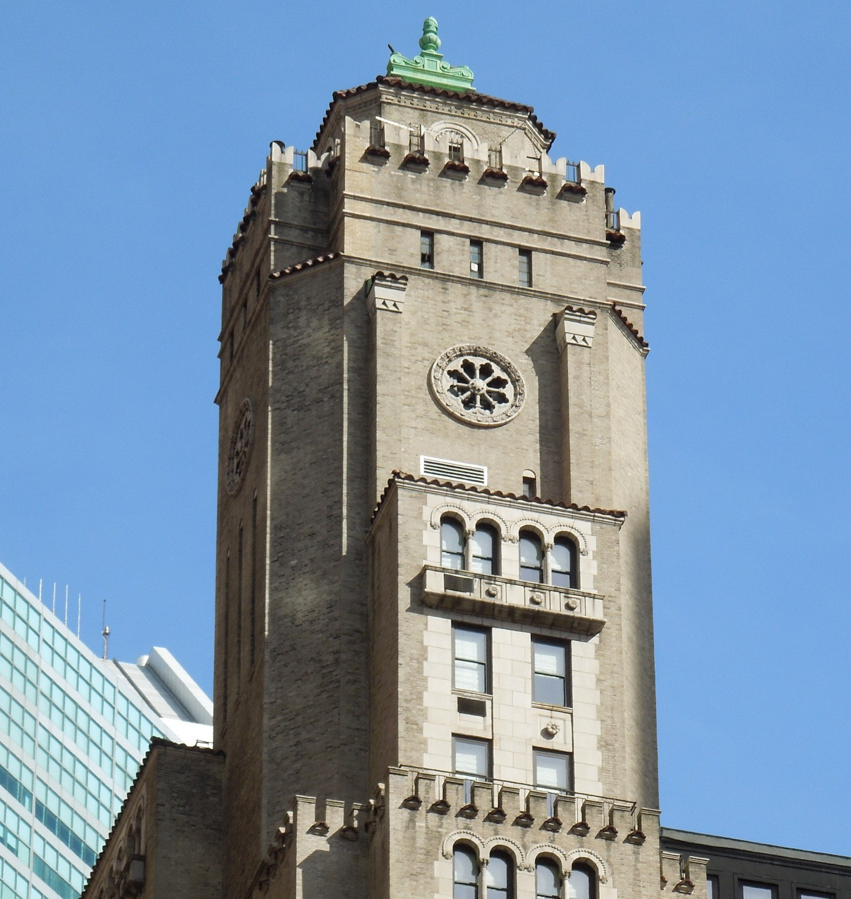

Today, we're practicing how to effectively use inspiration. We'll have to first find the inspiration, of course -- but after that, I'll find three aspects of the object that I think are done well. I'll try to imitate those three traits through an interface of my own creation (sketched only though). This way, I'm sharpening my designing skills -- but in specifically targeted areas that I can use the inspiration piece as a reference for how it's done right.
You can always use the objects already around you as inspiration; I find that architecture can be quite creative in the right places. However, I find the most inspiration from art that's in a similar media form as what I'm creating. So I went off to the nearest art museum -- which is the Sheldon Art Museum since I'm currently a student at the University of Nebraska-Lincoln. Once there, I located an exhibit that caught my eye the most.
Depicting the New York City skyline at night, Georgia O'Keeffe's aptly named New York, Night immediately drew my attention. O'Keeffe's inspiration was actually her surrounding architecture: NYC's many rising skyscrapers. The most notable building -- recognizable from it's uniquely shaped window -- is the Beverly Hotel. But the streets below that are depicted also catch the eye with how detailed they are.
The contrast of this piece is the first thing that came to my mind as something to imitate. There's, of course, the bright light being pops of contrast against the shadow of the night. But, as Jessie in her Principles of Design Explained! Youtube series explains in her video about contrast (https://www.youtube.com/watch?v=7iwZEuT29vc), contrast can also be created by complimentary colors. O'Keeffe actually mixes different modes of contrast, creating a bright blue light from a window versus orange shadows to draw attention to that window.
Because that window is actually very recognizable! As mentioned previously, viewers with background knowledge of NYC will know it belongs to the Beverly Hotel -- which gives a physical landmark to connect to this piece. As explained by Brent Noll and Maximus Pauson in their video "GOOD vs BAD Character Design: Tips and Tricks!" (https://www.youtube.com/watch?v=8wm9ti-gzLM), unique shapes make for very recognizable subjects. The flowery shape of the Beverly Hotel window stands out against the square geometry of the city buildings, and turns it into the main focus of the painting. (And as a disclaimer, while the video is specifically about character design, I've found that many tips about it can transfer to general design or interface design as well.)
And then finally, I think the streets are a great supporting portions of the painting. Firstly, they're noticable because of their positioning in the rule of thirds -- aligning right at those intersection points -- and bright dots of the headlights contrasting against the night's darkness. But after catching your attention, it directs you to the main subject of the painting (the Beverly Hotel) because they act as leading lines. Referencing Jessie's Principles of Design Explained! Youtube series again (because it's so concisely informative!), her video about movement in design explains that these streets are such great leading lines because viewers eyes' follow the direction of the road. This is because we anticipate there being something at the 'end' of the road -- and there is: the hotel.
So now I'll try to stretch my creative muscles and sketch an interface that really focuses on contrast, unique shapes, and leading lines! It was pretty late when I got to this part, so this hypothetical interface is a website (or app?) to learn about constellations or space. And it's sized for more vertically long window sizes -- so most likely tablets or shrunken desktop browsers.

I played with the idea of having the peripherals of the interface be a busy space background. This way, it contrasts the main body of the page through mainly texture and noise; ideally, the brain would ignore the edges of the interface because of the decorative noise and focus on the actual content of the page. Additionally, it's a bit abnormal, but I have the header of the page sloping inward to the main content -- which is centered on the interface. It serves as leading lines and hopefully a unique, recognizable trait of the interface. I wanted to play with unique shapes that fit the theme as well, so I turned some constellations into buttons! Lastly, the shooting star in the second section directs the viewers attention to the direction its falling: toward the actionable button of the section.
Honestly, I probably wouldn't have made these choices in a real project -- because they're so out there! In the end, some choices were more valuable than others... But I'm still glad I was able to experiment with this exercise and understand what works and doesn't in the creative process of my interfaces!